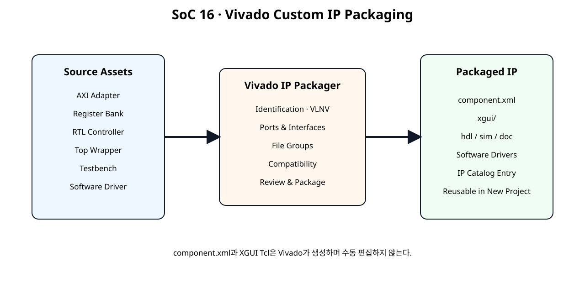
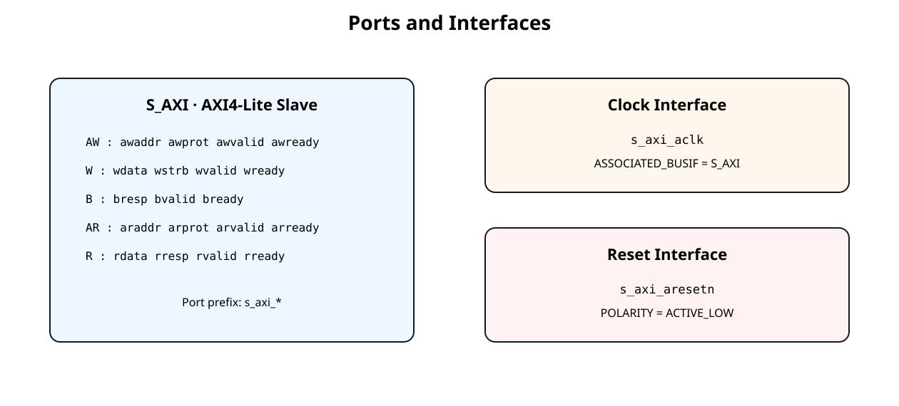
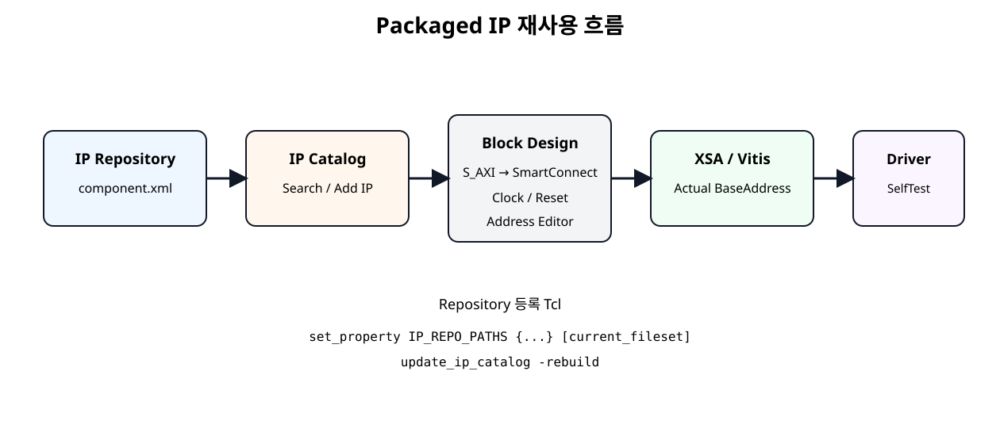

입력
검증된 RTL·Testbench·Driver 소스를 Packaging Source로 정리한다.
Basys3 SoC + NPU · SoC 16
SoC 12~15에서 만든 AXI4-Lite Adapter, Register Bank, RTL Controller, Testbench, MicroBlaze V Driver를 하나의 재사용 가능한 Custom IP 자산으로 묶는다. IP Packager가 생성한 component.xml을 기반으로 새 Vivado Project의 IP Catalog에 등록하고 Block Design에서 다시 사용하는 흐름까지 연결한다.
검증된 RTL·Testbench·Driver 소스를 Packaging Source로 정리한다.
Interface, File Group, Compatibility, Identification을 정의한다.
IP Repository에 등록하고 새 Block Design에서 동일 IP를 다시 사용한다.
이번 장은 RTL 기능을 변경하는 장이 아니다. 지금까지 검증한 Hardware/Software 자산에 재사용 가능한 IP 메타데이터와 배포 구조를 부여한다.
| RTL Source 직접 사용 | Packaged IP 사용 |
|---|---|
| Project마다 Source를 다시 추가 | IP Catalog에서 검색해 추가 |
| AXI Port 연결을 매번 확인 | Bus Interface로 표시 |
| File 용도 구분을 사용자가 관리 | Synthesis/Simulation/Driver File Group으로 관리 |
| Version 식별이 약함 | Vendor:Library:Name:Version으로 식별 |

| 자산 | 역할 |
|---|---|
| AXI Adapter | AW/W/B/AR/R Protocol 처리 |
| Register Bank | Register Map과 W1P/W1C 정책 |
| RTL Controller | 실제 Hardware 기능 |
| Top Wrapper | AXI/Register/Controller 연결 |
| Testbench | Function 검증 |
| Software Driver | MicroBlaze V Application API |
Vivado의 Create a new AXI4 peripheral은 AXI Peripheral의 새 Template을 생성하는 기능이다. 현재 설계는 이미 SoC 12~15에서 AXI Slave와 Driver까지 만들었으므로 다시 Template을 생성하지 않는다.
이번 장에서는 Package a specified directory를 기본 흐름으로 사용하고, 기존 Vivado Project가 있는 경우 Package your current project를 대안으로 제시한다.
UG1118의 Directory Inference 규칙에 맞춰 Synthesis, Testbench, Example, Documentation을 분리한다.
custom_processing_ip_1_0/
├── hdl/
│ ├── axi4lite_slave_adapter.v
│ ├── custom_register_bank.v
│ ├── custom_axi4lite_ip.v
│ ├── example_processing_controller.v
│ └── custom_axi4lite_controller_ip.v
├── testbench/
│ └── tb_custom_axi4lite_controller_ip.v
├── drivers/
│ └── custom_processing_v1_0/
│ └── src/
│ ├── custom_driver.c
│ ├── custom_driver.h
│ └── custom_regmap.h
├── examples/
│ ├── custom_driver_example.c
│ └── test_custom_driver_mock.c
├── doc/
│ └── README_PACKAGE.md
└── tcl/
├── prepare_packaging_project.tcl
└── add_ip_repo.tcl
drivers/는 Software Drivers File Group에 Package 화면에서 명시적으로 추가한다.
Packaging Top은 기존 custom_axi4lite_controller_ip이다.
Top은 SoC 14에서 확정한 것처럼 Wire/Instance/Port Connection만 담당한다.
Vivado IP Packager는 <interface_name>_<AXI signal> 형식의 Port 이름을 이용해 AXI Bus Interface를 자동 추론할 수 있다.

s_axi_* 규칙으로 작성되어 AXI4-Lite Slave Interface 추론에 적합하다.Package 화면에서 반드시 S_AXI 또는 동등한 AXI4-Lite Slave Interface로 올바르게 묶였는지 확인한다.
| Port | Interface | 확인값 |
|---|---|---|
s_axi_aclk | Clock | Associated Bus Interface → S_AXI |
s_axi_aclk | Clock | Associated Reset → s_axi_aresetn |
s_axi_aresetn | Reset | Polarity → Active-Low |
Clock와 AXI Bus의 Association이 빠지면 IP Integrator에서 Clock/Reset 검증 Warning의 원인이 될 수 있다.
교육용 기본값은 다음처럼 사용한다.
| 항목 | 값 |
|---|---|
| Vendor | user.org |
| Library | user |
| Name | custom_processing_ip |
| Version | 1.0 |
| Display Name | Custom Processing AXI4-Lite IP |
| Taxonomy | /UserIP |
실제 외부 배포 시 Vendor는 소유한 조직명/도메인 정책에 맞게 변경한다.
현재 학습의 주 Target은 Basys3의 Artix-7이지만 IP 자체는 Board Pin을 포함하지 않는다. Package 화면에서 현재 Target Part가 Compatible인지 먼저 확인하고, 다른 Family까지 확장할 때 별도로 Compatibility를 검증한다.
UG1118은 HDL Synthesis, HDL Simulation, Documentation, Test Bench, Drivers 등 여러 File Group을 지원한다.
| File Group | SoC 16 |
|---|---|
| HDL Synthesis | hdl/*.v |
| Simulation / Test Bench | testbench/tb_custom_axi4lite_controller_ip.v |
| Software Drivers | drivers/custom_processing_v1_0/src/* |
| Examples | examples/* |
| Documentation | doc/README_PACKAGE.md |
다음 5개 RTL 파일이 Synthesis Source이다.
axi4lite_slave_adapter.v
custom_register_bank.v
custom_axi4lite_ip.v
example_processing_controller.v
custom_axi4lite_controller_ip.vPackaging 때문에 RTL을 하나의 거대한 파일로 합치지 않는다. 기존 재사용 모듈 구조를 그대로 유지한다.
tb_custom_axi4lite_controller_ip.v를 Test Bench File Group에 포함한다.
현재 실행 환경에는 Vivado Simulator가 없으므로 이 장에서도 xsim 실행 결과를 실제 결과로 표시하지 않는다.
Driver 자산은 다음 세 파일이다.
custom_driver.c
custom_driver.h
custom_regmap.hIP Packager의 Software Drivers File Group에 이 파일들을 추가해 Hardware IP와 함께 배포할 수 있도록 한다.
SoC 16에서는 Driver를 Package에 포함하여 함께 배포하는 것까지 완료한다. Driver Metadata, Config Table 자동 생성, BSP 자동연동은 이후 필요 시 별도 확장한다.
아무 RTL Project를 열거나 Packaging 작업용 Project를 연다.
Create and Package New IP를 실행한다.
Package a specified directory를 선택한다.
custom_processing_ip_1_0 폴더를 지정한다.
Standalone IP로 사용할 것이므로 Package as a library core는 선택하지 않는다.
Wizard 완료 후 Package IP Window에서 세부 설정을 확인한다.
이미 현재 RTL을 Source로 등록한 Vivado Project가 있다면 Package your current project도 사용할 수 있다.
# SoC 16 - Create a Vivado project for reviewing/packaging the Custom IP
#
# This script prepares the RTL and simulation files.
# It does NOT hand-create component.xml.
# After it finishes:
# Tools > Create and Package New IP
# -> Package your current project
#
# Vivado 2026.1 target: Basys3 XC7A35T
set script_dir [file dirname [file normalize [info script]]]
set ip_root [file normalize [file join $script_dir ".."]]
set work_dir [file normalize [file join $ip_root "_vivado_packaging_work"]]
file delete -force $work_dir
create_project -force soc16_custom_ip_packaging \
$work_dir \
-part xc7a35tcpg236-1
set hdl_dir [file join $ip_root "hdl"]
set tb_dir [file join $ip_root "testbench"]
add_files -norecurse [list \
[file join $hdl_dir "axi4lite_slave_adapter.v"] \
[file join $hdl_dir "custom_register_bank.v"] \
[file join $hdl_dir "custom_axi4lite_ip.v"] \
[file join $hdl_dir "example_processing_controller.v"] \
[file join $hdl_dir "custom_axi4lite_controller_ip.v"] \
]
set_property top custom_axi4lite_controller_ip [current_fileset]
update_compile_order -fileset sources_1
add_files -fileset sim_1 -norecurse [list \
[file join $tb_dir "tb_custom_axi4lite_controller_ip.v"] \
]
set_property top tb_custom_axi4lite_controller_ip [get_filesets sim_1]
update_compile_order -fileset sim_1
puts ""
puts "SoC 16 packaging review project created."
puts "Top: custom_axi4lite_controller_ip"
puts ""
puts "Next GUI step:"
puts " Tools > Create and Package New IP"
puts " Package your current project"
puts ""
puts "Do not manually create component.xml."
제공 Tcl은 Basys3 Part로 Packaging 검토 Project를 만드는 보조 스크립트이다. 실제 Package 단계는 GUI에서 수행한다.
| 확인 | 정상 기준 |
|---|---|
| AXI Bus | S_AXI AXI4-Lite Slave |
| Clock | s_axi_aclk |
| Reset | s_axi_aresetn Active-Low |
| Address Width | Top Parameter C_S_AXI_ADDR_WIDTH 연결 |
| Data Width | 32-bit |
자동 추론이 틀리면 Auto Infer Interface 또는 수동 Bus Interface Mapping으로 수정한다.
VLNV와 Display Name 확인
Target Part/Family 확인
Synthesis, Testbench, Driver, Documentation 확인
S_AXI, Clock, Reset Association 확인
Critical Warning과 Packager DRC 확인
문제가 없을 때 최종 Packaging 실행
Packaging이 완료되면 Vivado가 IP root에 IP-XACT 기반 component.xml을 생성하고 xgui/에 Customization GUI Tcl을 생성한다.
component.xml과 XGUI 파일을 교육자료에서 임의로 손 작성하거나 수동 수정하는 것을 기본 흐름으로 삼지 않는다.
GUI에서는 Project Settings → IP → Repository → Add에서 Repository Parent Path를 추가한다.
set_property IP_REPO_PATHS {/absolute/path/to/ip_repo} [current_fileset]
update_ip_catalog -rebuildcomponent.xml이 있는 하위 폴더를 포함하는 Parent Repository를 등록한다.
Custom Processing AXI4-Lite IP를 검색한다.
새 Block Design에 추가한다.
VLNV가 의도한 1.0인지 확인한다.
Packaged IP가 정상이라면 개별 AW/W/B/AR/R Port가 아니라 하나의 AXI Bus Interface로 Block Design에 나타나는 것이 핵심이다.
Register Offset은 기존 SoC 11과 동일하고, Base Address만 새 Project의 Address Editor에서 결정된다.
SoC 15 Driver는 Base Address를 외부에서 받도록 설계했으므로 새 Project에 IP를 다시 배치해 Base Address가 바뀌어도 Driver Source를 고칠 필요가 없다.
# SoC 16 - Create a Vivado project for reviewing/packaging the Custom IP
#
# This script prepares the RTL and simulation files.
# It does NOT hand-create component.xml.
# After it finishes:
# Tools > Create and Package New IP
# -> Package your current project
#
# Vivado 2026.1 target: Basys3 XC7A35T
set script_dir [file dirname [file normalize [info script]]]
set ip_root [file normalize [file join $script_dir ".."]]
set work_dir [file normalize [file join $ip_root "_vivado_packaging_work"]]
file delete -force $work_dir
create_project -force soc16_custom_ip_packaging \
$work_dir \
-part xc7a35tcpg236-1
set hdl_dir [file join $ip_root "hdl"]
set tb_dir [file join $ip_root "testbench"]
add_files -norecurse [list \
[file join $hdl_dir "axi4lite_slave_adapter.v"] \
[file join $hdl_dir "custom_register_bank.v"] \
[file join $hdl_dir "custom_axi4lite_ip.v"] \
[file join $hdl_dir "example_processing_controller.v"] \
[file join $hdl_dir "custom_axi4lite_controller_ip.v"] \
]
set_property top custom_axi4lite_controller_ip [current_fileset]
update_compile_order -fileset sources_1
add_files -fileset sim_1 -norecurse [list \
[file join $tb_dir "tb_custom_axi4lite_controller_ip.v"] \
]
set_property top tb_custom_axi4lite_controller_ip [get_filesets sim_1]
update_compile_order -fileset sim_1
puts ""
puts "SoC 16 packaging review project created."
puts "Top: custom_axi4lite_controller_ip"
puts ""
puts "Next GUI step:"
puts " Tools > Create and Package New IP"
puts " Package your current project"
puts ""
puts "Do not manually create component.xml."
# SoC 16 - Add packaged IP repository to the current Vivado project
#
# Usage:
# 1. Edit repo_path if needed.
# 2. Source this file in the Vivado Tcl Console:
# source add_ip_repo.tcl
#
# The path must point to the repository parent that contains
# packaged IP directories with component.xml files.
set script_dir [file dirname [file normalize [info script]]]
set repo_path [file normalize [file join $script_dir ".." ".."]]
puts "Adding IP repository:"
puts " $repo_path"
set_property IP_REPO_PATHS $repo_path [current_fileset]
update_ip_catalog -rebuild
puts "IP catalog rebuild requested."
puts "Search the IP Catalog for: Custom Processing AXI4-Lite IP"
두 스크립트 모두 component.xml을 손으로 생성하지 않는다.
이번 장에서 제공하는 Source Package는 Packaging 전 원본 자산이다.
custom_processing_ip_1_0/
├── hdl/
│ ├── axi4lite_slave_adapter.v
│ ├── custom_register_bank.v
│ ├── custom_axi4lite_ip.v
│ ├── example_processing_controller.v
│ └── custom_axi4lite_controller_ip.v
├── testbench/
│ └── tb_custom_axi4lite_controller_ip.v
├── drivers/
│ └── custom_processing_v1_0/
│ └── src/
│ ├── custom_driver.c
│ ├── custom_driver.h
│ └── custom_regmap.h
├── examples/
│ ├── custom_driver_example.c
│ └── test_custom_driver_mock.c
├── doc/
│ └── README_PACKAGE.md
└── tcl/
├── prepare_packaging_project.tcl
└── add_ip_repo.tcl
| Gate | 확인 |
|---|---|
| 1 | Package IP DRC 통과 |
| 2 | 새 Project의 IP Catalog에서 검색 |
| 3 | Block Design에 S_AXI Interface로 추가 |
| 4 | Clock/Reset Connection 정상 |
| 5 | Address Editor Base 할당 |
| 6 | Validate Design |
| 7 | Synthesis / Implementation |
| 8 | Vitis에서 Driver SelfTest |
| 9 | RunBlocking 결과 확인 |
| 증상 | 원인 후보 | 확인 |
|---|---|---|
| IP Catalog에 안 보임 | component.xml 미생성 / Repository 경로 오류 | Packaging 완료, IP_REPO_PATHS |
| AW/W/R Port가 개별 Pin으로 보임 | AXI Interface 추론 실패 | Ports and Interfaces에서 S_AXI Mapping |
| Clock Warning | ASSOCIATED_BUSIF 누락 | s_axi_aclk ↔ S_AXI |
| Reset Warning | Polarity/Association 오류 | s_axi_aresetn Active-Low |
| Driver 파일이 Package에 없음 | Software Drivers File Group 미등록 | File Groups |
| Vitis가 Driver를 자동 선택하지 않음 | Driver File 포함과 BSP 자동연동 혼동 | Metadata 통합은 별도 단계 |
| 새 Project에서 Register가 안 맞음 | Base Address를 고정값으로 사용 | 새 Address Editor 값 전달 |
| component.xml을 직접 수정함 | Packager 관리파일 수동 변경 | Package IP Window에서 수정 후 Repackage |
custom_axi4lite_controller_ip이다.s_axi_* Port가 AXI4-Lite Slave Interface로 추론되는지 확인한다.s_axi_aclk가 S_AXI와 연관되어 있다.s_axi_aresetn이 Active-Low Reset으로 정의되어 있다.| 문서 | 확인 항목 |
|---|---|
| AMD UG1118 · Creating and Packaging Custom IP · 2026.1 | Custom IP Packaging 전체 절차 |
| UG1118 · Supported IP Packager Inputs | HDL, Simulation, Testbench, Drivers, Documentation File Group |
| UG1118 · Create and Package New IP Wizard | Package Project / Directory / Create New AXI4 Peripheral 구분 |
| UG1118 · Interface Inference | <interface>_<AXI signal> Name Matching |
| UG1118 · Clock/Reset Interface Inference | Clock Association, Active-Low Reset 추론 |
| UG1118 · Outputs from IP Packager | component.xml, xgui Tcl 생성 |
| AMD UG896 · Managing IP Repositories · 2026.1 | Project Settings → IP → Repository |
| AMD UG835 · update_ip_catalog · 2026.1 | IP_REPO_PATHS와 IP Catalog rebuild Tcl |